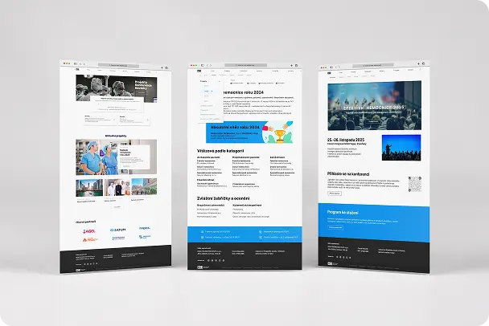
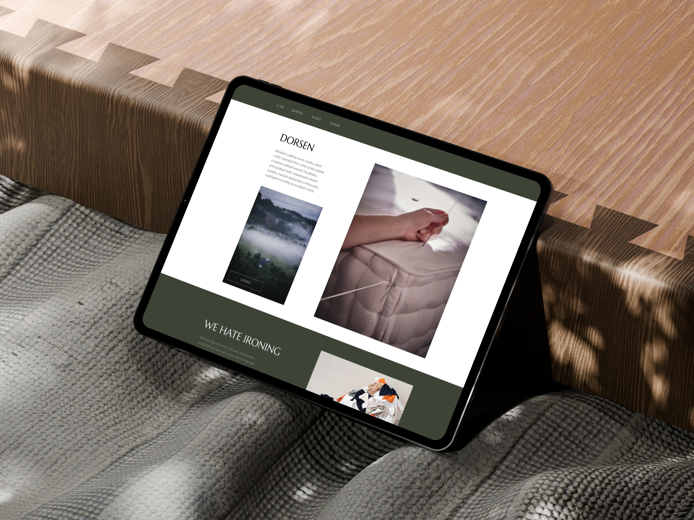

PH
Moje práce
UI/UX
Branding
Grafický design
Fotografie
Kontakt
UI/UX
Branding
Grafický design
Fotografie
Kontakt
Věřím, že dobrý UX design
má být neviditelný,
protože vše funguje tak, jak má
Jednoduchost, která usnadňuje život.
UI/UX Projekty
REDESIGN NÁKUPNÍHO PROCESU

REDESIGN WEBU

UX/UI REVIZE WEBU
zpět domů
branding